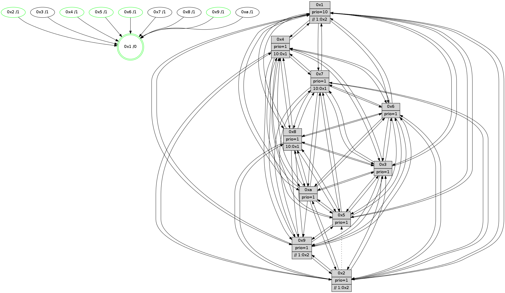

>> << IDX [start] -100 -25 -5 +0 +5 +25 +100 [945.397634029]
 Previous packets
940.003189 [Hello(6): seq=601 sym=2,3,5,4,7,9,8,10,1 sysInfo= stat=2:4,5,6,8/3:1,10,15,9/5:14,3,13,12/4:13,5,5,1/7:11,2,11,5/9:4,6,13,4/8:8,4,9,1/10:10,13,3,10/1:12,7,10,1]
940.006940 [Color(5) seq=254 @0:0 prio=1]
940.012538 [Color(6) seq=233 @0:0 prio=1]
----------------------------------------------------------------------
940.668848 beacon01(faad) #0 coord=01,02,03,04,05,06,07,0a,09,08 cycle=688.0ms assoc
-- color-indic=1 64 7f 15
940.678830 beacon02(faad) #0 coord=01,02,03,04,05,06,07,0a,09,08 cycle=688.0ms assoc 64 ec 24
940.688831 beacon03(faad) #0 coord=01,02,03,04,05,06,07,0a,09,08 cycle=688.0ms assoc 64 96 69
940.698832 beacon04(faad) #0 coord=01,02,03,04,05,06,07,0a,09,08 cycle=688.0ms assoc 64 e1 83
940.708832 beacon05(faad) #0 coord=01,02,03,04,05,06,07,0a,09,08 cycle=688.0ms assoc 64 9b ce
940.718831 beacon06(faad) #0 coord=01,02,03,04,05,06,07,0a,09,08 cycle=688.0ms assoc 64 15 19
940.728833 beacon07(faad) #0 coord=01,02,03,04,05,06,07,0a,09,08 cycle=688.0ms assoc 64 6f 54
940.738839 beacon0a(faad) #0 coord=01,02,03,04,05,06,07,0a,09,08 cycle=688.0ms assoc 64 1e 5f
940.748835 beacon09(faad) #0 coord=01,02,03,04,05,06,07,0a,09,08 cycle=688.0ms assoc 64 90 88
940.758837 beacon08(faad) #0 coord=01,02,03,04,05,06,07,0a,09,08 cycle=688.0ms assoc 64 ea c5
940.770686 [Hello(4): seq=601 sym=5,7,6,2,3,9,8,10,1 sysInfo= stat=5:13,13,12,10/7:4,7,14,6/6:8,0,9,9/2:13,11,6,9/3:3,8,8,7/9:4,2,0,7/8:1,0,2,1/10:7,8,2,9/1:6,3,14,1]
940.774053 [Color(1) seq=282 @0:0 prio=10 >>1.@2,1.@3,1.@5]
940.775677 [Hello(10): seq=534 sym=6,2,3,8,7,5,9,4,1 sysInfo=hasWarning stat=6:0,10,14,4/2:6,4,11,4/3:15,0,5,7/8:11,8,2,0/7:2,4,0,0/5:3,6,0,11/9:0,2,0,0/4:12,11,3,7/1:15,15,14,1]
940.778836 [Hello(9): seq=545 sym=2,5,3,4,6,8,1 asym=7,10 sysInfo=hasWarning stat=2:14,11,12,2/5:0,11,9,2/3:13,9,7,11/4:3,11,7,7/6:14,8,1,8/8:4,2,13,1/1:7,0,14,1/7:6,12,12,8/10:7,13,1,1]
940.781525 [Color(10) seq=222 @0:0 prio=1]
940.783305 [Color(9) seq=250 @0:0 prio=1 >>1.@2,1.@3,1.@5]
940.787319 [Hello(8): seq=545 sym=5,2,3,4,9,6,7,10,1 sysInfo=hasWarning stat=5:0,9,1,11/2:15,4,12,4/3:2,14,10,11/4:3,7,10,7/9:2,3,0,0/6:3,8,9,10/7:3,4,0,0/10:1,5,3,0/1:4,3,10,0]
940.792214 [Hello(7): seq=601 sym=2,3,5,6,4,8,9,10,1 sysInfo=hasWarning stat=2:12,4,8,12/3:11,11,14,11/5:14,4,4,14/6:10,15,0,6/4:14,11,14,1/8:4,5,1,0/9:1,2,0,0/10:0,9,4,1/1:12,10,11,0]
940.795658 [Color(7) seq=196 @0:0 prio=1 >10.@1,1.@5,1.@6]
----------------------------------------------------------------------
941.456979 beacon01(faad) #0 coord=01,02,03,04,05,06,07,0a,09,08 cycle=688.0ms assoc
-- color-indic=1 64 4b 0d
941.466961 beacon02(faad) #0 coord=01,02,03,04,05,06,07,0a,09,08 cycle=688.0ms assoc 64 d8 3c
941.476962 beacon03(faad) #0 coord=01,02,03,04,05,06,07,0a,09,08 cycle=688.0ms assoc 64 a2 71
941.486961 beacon04(faad) #0 coord=01,02,03,04,05,06,07,0a,09,08 cycle=688.0ms assoc 64 d5 9b
941.496961 beacon05(faad) #0 coord=01,02,03,04,05,06,07,0a,09,08 cycle=688.0ms assoc 64 af d6
941.506963 beacon06(faad) #0 coord=01,02,03,04,05,06,07,0a,09,08 cycle=688.0ms assoc 64 21 01
941.516964 beacon07(faad) #0 coord=01,02,03,04,05,06,07,0a,09,08 cycle=688.0ms assoc 64 5b 4c
941.526967 beacon0a(faad) #0 coord=01,02,03,04,05,06,07,0a,09,08 cycle=688.0ms assoc 64 2a 47
941.536968 beacon09(faad) #0 coord=01,02,03,04,05,06,07,0a,09,08 cycle=688.0ms assoc 64 a4 90
941.546967 beacon08(faad) #0 coord=01,02,03,04,05,06,07,0a,09,08 cycle=688.0ms assoc 64 de dd
941.559138 [Hello(3): seq=602 sym=1,7,6,2,4,8,9,10,5 sysInfo= stat=1:14,13,3,0/7:5,6,5,7/6:1,3,9,2/2:15,8,10,9/4:1,13,13,6/8:8,13,5,1/9:12,15,8,10/10:3,3,6,2/5:6,2,4,10]
941.561886 [Hello(1): seq=511 sym=4,2,9,5,10,3,8,6,7 sysInfo=coloring-mode-on,ColoringModeRequestCalled stat=4:11,3,14,1/2:9,9,12,11/9:8,6,12,5/5:3,9,4,4/10:11,8,8,2/3:11,0,8,2/8:12,0,6,0/6:7,9,9,10/7:6,4,12,11]
941.564453 [Hello(6): seq=602 sym=2,3,5,4,7,9,8,10,1 sysInfo= stat=2:4,5,6,8/3:1,10,15,9/5:14,3,13,12/4:14,5,5,1/7:12,3,11,5/9:5,7,13,4/8:9,4,9,1/10:11,14,3,10/1:13,8,10,1]
941.566971 [Hello(2): seq=598 sym=4,7,6,3,9,8,10,1 asym=5 sysInfo=hasWarning stat=4:7,15,4,5/7:6,4,0,9/6:11,5,8,8/3:5,14,7,5/9:5,6,9,4/8:10,15,6,8/10:9,2,9,9/1:10,2,13,1/5:10,0,4,0]
941.569862 [Hello(5): seq=602 sym=7,4,3,1,9,8,10 sysInfo=hasWarning stat=7:15,3,0,8/4:14,14,14,7/3:7,4,6,9/1:12,4,15,1/9:9,11,11,4/8:12,13,10,8/10:9,15,5,4]
941.573376 [Color(5) seq=255 @0:0 prio=1]
941.578430 [Color(2) seq=247 @0:0 prio=1 >>1.@2,1.@3,1.@5]
941.580463 [Color(6) seq=234 @0:0 prio=1]
941.582458 [Color(4) seq=207 @0:0 prio=1 >10.@1,1.@2,1.@3,1.@5]
----------------------------------------------------------------------
942.245110 beacon01(faad) #0 coord=01,02,03,04,05,06,07,0a,09,08 cycle=688.0ms assoc
-- color-indic=1 64 f7 08
942.255092 beacon02(faad) #0 coord=01,02,03,04,05,06,07,0a,09,08 cycle=688.0ms assoc 64 64 39
942.265091 beacon03(faad) #0 coord=01,02,03,04,05,06,07,0a,09,08 cycle=688.0ms assoc 64 1e 74
942.275092 beacon04(faad) #0 coord=01,02,03,04,05,06,07,0a,09,08 cycle=688.0ms assoc 64 69 9e
942.285092 beacon05(faad) #0 coord=01,02,03,04,05,06,07,0a,09,08 cycle=688.0ms assoc 64 13 d3
942.295093 beacon06(faad) #0 coord=01,02,03,04,05,06,07,0a,09,08 cycle=688.0ms assoc 64 9d 04
942.305095 beacon07(faad) #0 coord=01,02,03,04,05,06,07,0a,09,08 cycle=688.0ms assoc 64 e7 49
942.315099 beacon0a(faad) #0 coord=01,02,03,04,05,06,07,0a,09,08 cycle=688.0ms assoc 64 96 42
942.325099 beacon09(faad) #0 coord=01,02,03,04,05,06,07,0a,09,08 cycle=688.0ms assoc 64 18 95
942.335098 beacon08(faad) #0 coord=01,02,03,04,05,06,07,0a,09,08 cycle=688.0ms assoc 64 62 d8
942.346647 [Hello(4): seq=602 sym=5,7,6,2,3,9,8,10,1 sysInfo= stat=5:13,13,12,10/7:5,8,14,6/6:8,0,9,9/2:13,11,6,9/3:4,8,8,7/9:5,3,0,7/8:2,1,2,1/10:8,9,2,9/1:6,4,14,1]
942.349749 [Color(3) seq=243 @0:0 prio=1]
942.351208 [Hello(9): seq=546 sym=2,5,3,4,7,6,8,1 asym=10 sysInfo=hasWarning stat=2:15,12,12,2/5:1,12,9,2/3:14,9,7,11/4:4,12,7,7/7:7,13,12,8/6:15,9,1,8/8:5,3,13,1/1:8,1,14,1/10:7,13,1,1]
942.354225 [Hello(10): seq=535 sym=6,2,3,8,7,5,9,4,1 sysInfo=hasWarning stat=6:1,11,14,4/2:7,5,11,4/3:0,1,5,7/8:12,8,2,0/7:3,5,0,0/5:4,7,0,11/9:0,3,0,0/4:13,12,3,7/1:0,15,14,1]
942.357372 [Color(10) seq=223 @0:0 prio=1]
942.359041 [Color(9) seq=251 @0:0 prio=1 >>1.@2,1.@3,1.@5]
942.360575 [Hello(7): seq=602 sym=2,3,5,6,4,8,9,10,1 sysInfo=hasWarning stat=2:13,5,8,12/3:12,11,14,11/5:15,5,4,14/6:11,0,0,6/4:15,12,14,1/8:4,5,1,0/9:1,2,0,0/10:0,9,4,1/1:13,10,11,0]
942.364366 [Color(7) seq=197 @0:0 prio=1 >10.@1,1.@5,1.@6]
942.367611 [Color(1) seq=283 @0:0 prio=10 >>1.@2,1.@3,1.@5]
942.371574 [Hello(8): seq=546 sym=5,2,3,4,9,6,7,10,1 sysInfo=hasWarning stat=5:1,10,1,11/2:0,5,12,4/3:3,14,10,11/4:4,8,10,7/9:2,3,0,0/6:4,9,9,10/7:4,5,0,0/10:1,5,3,0/1:5,3,10,0]
942.375022 [Color(8) seq=247 @0:0 prio=1 >10.@1,1.@5,1.@6]
----------------------------------------------------------------------
943.033239 beacon01(faad) #0 coord=01,02,03,04,05,06,07,0a,09,08 cycle=688.0ms assoc
-- color-indic=1 64 33 06
943.043221 beacon02(faad) #0 coord=01,02,03,04,05,06,07,0a,09,08 cycle=688.0ms assoc 64 a0 37
943.053221 beacon03(faad) #0 coord=01,02,03,04,05,06,07,0a,09,08 cycle=688.0ms assoc 64 da 7a
943.063223 beacon04(faad) #0 coord=01,02,03,04,05,06,07,0a,09,08 cycle=688.0ms assoc 64 ad 90
943.073222 beacon05(faad) #0 coord=01,02,03,04,05,06,07,0a,09,08 cycle=688.0ms assoc 64 d7 dd
943.083221 beacon06(faad) #0 coord=01,02,03,04,05,06,07,0a,09,08 cycle=688.0ms assoc 64 59 0a
943.093223 beacon07(faad) #0 coord=01,02,03,04,05,06,07,0a,09,08 cycle=688.0ms assoc 64 23 47
943.103227 beacon0a(faad) #0 coord=01,02,03,04,05,06,07,0a,09,08 cycle=688.0ms assoc 64 52 4c
943.113227 beacon09(faad) #0 coord=01,02,03,04,05,06,07,0a,09,08 cycle=688.0ms assoc 64 dc 9b
943.123229 beacon08(faad) #0 coord=01,02,03,04,05,06,07,0a,09,08 cycle=688.0ms assoc 64 a6 d6
943.135380 [Hello(3): seq=603 sym=1,7,6,2,4,8,9,10,5 sysInfo= stat=1:15,14,3,0/7:6,7,5,7/6:2,4,9,2/2:0,9,10,9/4:2,14,13,6/8:9,14,5,1/9:13,0,8,10/10:4,4,6,2/5:7,3,4,10]
943.139097 [Hello(5): seq=603 sym=7,4,3,1,9,8,10 sysInfo=hasWarning stat=7:0,4,0,8/4:15,15,14,7/3:8,5,6,9/1:13,5,15,1/9:10,12,11,4/8:13,14,10,8/10:10,0,5,4]
943.141438 [Hello(2): seq=599 sym=4,7,6,3,9,8,10,1 asym=5 sysInfo=hasWarning stat=4:8,0,4,5/7:7,5,0,9/6:11,6,8,8/3:6,15,7,5/9:6,7,9,4/8:11,0,6,8/10:10,3,9,9/1:11,3,13,1/5:10,0,4,0]
943.143916 [Color(5) seq=256 @0:0 prio=1]
943.146462 [Hello(6): seq=603 sym=2,3,5,4,7,9,8,10,1 sysInfo= stat=2:4,5,6,8/3:2,11,15,9/5:14,3,13,12/4:15,6,5,1/7:13,4,11,5/9:6,8,13,4/8:10,5,9,1/10:12,15,3,10/1:13,9,10,1]
943.149283 [Color(6) seq=235 @0:0 prio=1]
943.150615 [Color(2) seq=248 @0:0 prio=1 >>1.@2,1.@3,1.@5]
943.155724 PARSE ERROR************************
Traceback (most recent call last):
File "PacketAnalysis.py", line 167, in showOperaPacket
structPacket = OperaPacketParse.parsePacket(rawPacket)
File "../../pkg-python/HipSens/Core/OperaPacketParse.py", line 461, in parsePacket
return parseHelloMessage(data)
File "../../pkg-python/HipSens/Core/OperaPacketParse.py", line 127, in parseHelloMessage
assert struct.calcsize("H")*len(neighAddrList) == len(linkList)
AssertionError
48 34 01 00 02 00 00 02 02 12 04 00 02 00 09 00 05 00 0a 00 03 00 08 00 06 00 07 00 53 04 00 84 00 00 4c 12 1e 4c bc aa 5c 68 44 a4 28 8b 28 0b 06 1d a9 a8 bc 46 4c 13
943.158522 [STC(1) #0.124 tree-change,inconsistent-stability,stable,to-color d=0]
943.160714 [Color(4) seq=208 @0:0 prio=1 >10.@1,1.@2,1.@3,1.@5]
----------------------------------------------------------------------
943.821372 beacon01(faad) #0 coord=01,02,03,04,05,06,07,0a,09,08 cycle=688.0ms assoc
-- color-indic=1 64 8f 03
943.831354 beacon02(faad) #0 coord=01,02,03,04,05,06,07,0a,09,08 cycle=688.0ms assoc 64 1c 32
943.841356 beacon03(faad) #0 coord=01,02,03,04,05,06,07,0a,09,08 cycle=688.0ms assoc 64 66 7f
943.851355 beacon04(faad) #0 coord=01,02,03,04,05,06,07,0a,09,08 cycle=688.0ms assoc 64 11 95
943.861367 beacon05(faad) #0 coord=01,02,03,04,05,06,07,0a,09,08 cycle=688.0ms assoc 64 6b d8
943.871354 beacon06(faad) #0 coord=01,02,03,04,05,06,07,0a,09,08 cycle=688.0ms assoc 64 e5 0f
943.881356 beacon07(faad) #0 coord=01,02,03,04,05,06,07,0a,09,08 cycle=688.0ms assoc 64 9f 42
943.891358 beacon0a(faad) #0 coord=01,02,03,04,05,06,07,0a,09,08 cycle=688.0ms assoc 64 ee 49
943.901359 beacon09(faad) #0 coord=01,02,03,04,05,06,07,0a,09,08 cycle=688.0ms assoc 64 60 9e
943.911361 beacon08(faad) #0 coord=01,02,03,04,05,06,07,0a,09,08 cycle=688.0ms assoc 64 1a d3
943.922294 [STC(3)->1 #0.124 to-color d=1]
943.925969 [STC(6)->1 #0.124 tree-change,inconsistent-stability,stable,to-color d=1]
943.927399 [Hello(8): seq=547 sym=5,2,3,4,9,6,7,10,1 sysInfo=hasWarning stat=5:2,10,1,11/2:1,6,12,4/3:4,15,10,11/4:5,9,10,7/9:2,3,0,0/6:5,10,9,10/7:4,5,0,0/10:1,5,3,0/1:6,3,11,0]
943.929967 [Hello(7): seq=603 sym=2,3,5,6,4,8,9,10,1 sysInfo=hasWarning stat=2:14,6,8,12/3:13,12,14,11/5:0,5,4,14/6:12,1,0,6/4:0,13,14,1/8:5,6,1,0/9:1,2,0,0/10:0,9,4,1/1:14,11,12,0]
943.934403 [STC(7)->1 #0.124 to-color d=1]
943.936746 [Hello(4): seq=603 sym=5,7,6,2,3,9,8,10,1 sysInfo= stat=5:13,13,12,10/7:6,9,14,6/6:8,0,9,9/2:13,11,6,9/3:5,9,8,7/9:6,4,0,7/8:3,2,2,1/10:9,10,2,9/1:6,5,14,1]
943.940432 [Color(1) seq=284 @0:0 prio=10 >>1.@2,1.@3,1.@5]
943.942516 [Hello(10): seq=536 sym=6,2,3,8,7,5,9,4,1 sysInfo=hasWarning stat=6:2,12,14,4/2:8,6,11,4/3:1,2,5,7/8:13,9,2,0/7:4,6,0,0/5:5,7,0,11/9:0,4,0,0/4:14,13,3,7/1:1,0,15,1]
943.945960 [STC(10)->1 #0.124 to-color d=1]
943.947861 [Hello(9): seq=547 sym=2,5,3,4,7,6,8,1 sysInfo=hasWarning stat=2:0,13,12,2/5:2,12,9,2/3:15,10,7,11/4:5,13,7,7/7:8,14,12,8/6:0,10,1,8/8:6,4,13,1/1:9,2,15,1]
943.951859 [STC(8)->1 #0.124 to-color d=1]
----------------------------------------------------------------------
944.609502 beacon01(faad) #0 coord=01,02,03,04,05,06,07,0a,09,08 cycle=688.0ms assoc
-- color-indic=1 64 1b da
944.619484 beacon02(faad) #0 coord=01,02,03,04,05,06,07,0a,09,08 cycle=688.0ms assoc 64 88 eb
944.629484 beacon03(faad) #0 coord=01,02,03,04,05,06,07,0a,09,08 cycle=688.0ms assoc 64 f2 a6
944.639485 beacon04(faad) #0 coord=01,02,03,04,05,06,07,0a,09,08 cycle=688.0ms assoc 64 85 4c
944.649487 beacon05(faad) #0 coord=01,02,03,04,05,06,07,0a,09,08 cycle=688.0ms assoc 64 ff 01
944.659486 beacon06(faad) #0 coord=01,02,03,04,05,06,07,0a,09,08 cycle=688.0ms assoc 64 71 d6
944.669485 beacon07(faad) #0 coord=01,02,03,04,05,06,07,0a,09,08 cycle=688.0ms assoc 64 0b 9b
944.679491 beacon0a(faad) #0 coord=01,02,03,04,05,06,07,0a,09,08 cycle=688.0ms assoc 64 7a 90
944.689491 beacon09(faad) #0 coord=01,02,03,04,05,06,07,0a,09,08 cycle=688.0ms assoc 64 f4 47
944.699492 beacon08(faad) #0 coord=01,02,03,04,05,06,07,0a,09,08 cycle=688.0ms assoc 64 8e 0a
944.710743 [Hello(1): seq=513 sym=4,2,9,5,10,3,8,6,7 sysInfo=coloring-mode-on,ColoringModeRequestCalled stat=4:12,5,14,1/2:10,10,13,11/9:9,6,13,5/5:4,10,4,4/10:12,8,9,2/3:11,0,9,2/8:13,1,6,0/6:8,10,9,10/7:6,4,12,11]
944.715049 [Hello(5): seq=604 sym=7,6,4,3,1,9,8,10 sysInfo=hasWarning stat=7:1,4,1,8/6:0,1,1,0/4:0,0,14,7/3:9,5,6,9/1:14,6,0,1/9:11,12,12,4/8:14,14,10,8/10:11,0,6,4]
944.717378 [Hello(2): seq=600 sym=4,7,6,3,9,8,10,1 asym=5 sysInfo=hasWarning stat=4:9,1,4,5/7:8,5,1,9/6:11,6,9,8/3:7,15,7,5/9:7,7,10,4/8:12,0,6,8/10:11,3,10,9/1:12,4,14,1/5:10,1,4,0]
944.721449 [Color(5) seq=257 @0:0 prio=1]
944.722781 [Hello(6): seq=604 sym=2,3,5,4,7,9,8,10,1 sysInfo= stat=2:4,6,6,8/3:3,11,15,9/5:14,3,13,12/4:0,7,5,1/7:14,4,12,5/9:7,8,13,4/8:11,5,10,1/10:13,15,4,10/1:14,10,11,1]
944.726289 [Hello(3): seq=604 sym=1,7,6,2,4,8,9,10,5 sysInfo= stat=1:0,15,4,0/7:7,7,6,7/6:3,5,10,2/2:1,10,11,9/4:3,15,13,6/8:10,14,6,1/9:14,0,8,10/10:5,4,7,2/5:8,3,4,10]
944.729576 [Color(6) seq=236 @0:0 prio=1]
944.731032 [Color(4) seq=209 @0:0 prio=1 >10.@1,1.@2,1.@3,1.@5]
944.736039 [Color(2) seq=249 @0:0 prio=1 >>1.@2,1.@3,1.@5]